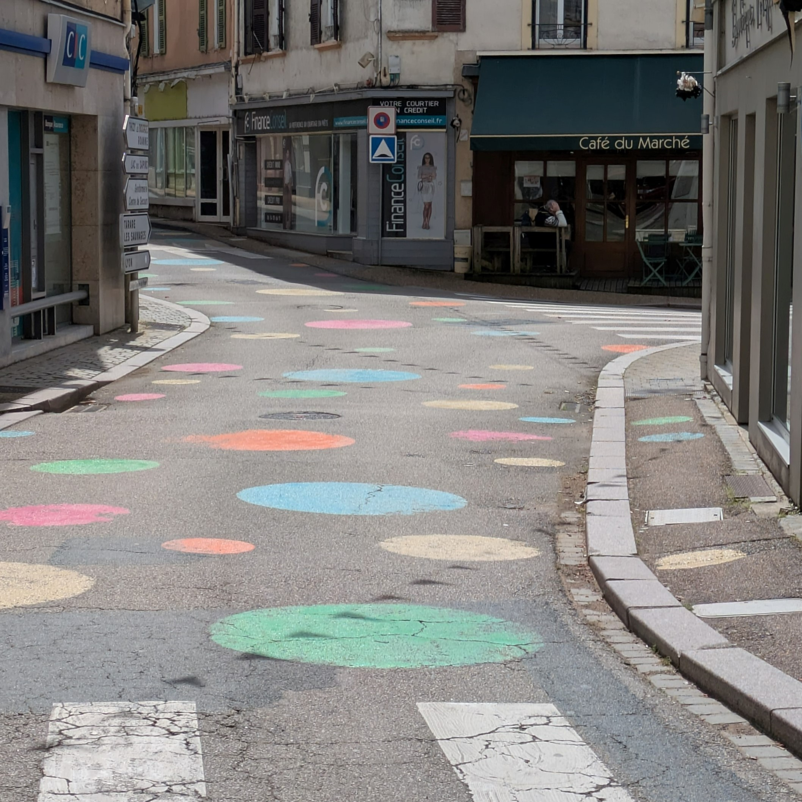

Marquages d’animation dans l’espace public
Usages, perceptions et enjeux politiques d’un dispositif visuel émergent
Ce travail s’inscrit à la fois dans un stage de 5 mois réalisé au Cerema Territoires et Ville à Lyon et dans mon mémoire de fin d’étude. Il interroge le rôle des marquages d’animation dans l’espace public, à la croisée des usages, des perceptions et des enjeux politiques.

Contexte
Ce projet a été mené au sein du Cerema, dans les groupes « Espace Public et Voirie Urbaine » (EPVU) et « Sécurité des Déplacements » (SD), dans le cadre du programme national ID-Marche (2023). L’objectif était de comprendre le développement des marquages d’animation en France, leur intégration progressive dans la réglementation, et leur rôle dans les politiques publiques de promotion des mobilités actives.
👉 Résultats sur le site du Cerema
Problématique
Les marquages d’animation — fresques, jeux au sol, formes colorées — ne sont pas de simples éléments décoratifs. Ils participent à la structuration visible de l’espace public et traduisent des choix politiques : apaiser la circulation, encourager la marche, favoriser le jeu ou encore transformer les usages.
Ce travail interroge leur rôle en tant qu’instrument d’action publique : peuvent-ils influencer les comportements, les imaginaires, voire les rapports de pouvoir dans l’espace urbain ?
Méthodologie
- Revue de la littérature scientifique et technique
- Analyse de la réglementation (IISR, guides Cerema…)
- Questionnaire en ligne (33 répondants)
- Entretiens avec collectivités, entreprises, associations et usagers
- Recensement cartographique (250 sites)
- Observations de terrain (Lyon, Paris, Rouen, Lille, Le Havre)
Résultats principaux
Les marquages d’animation se développent fortement depuis une dizaine d’années, notamment dans les rues scolaires et les zones apaisées.
Ils remplissent plusieurs fonctions :
- sécuriser les déplacements
- attirer l’attention des automobilistes
- encourager les mobilités actives
- favoriser le jeu et l’appropriation de l’espace
Ensemble des types d’aménagement sous statut de zone de rencontre et daires piétonnes où l'on retrouve la plupart des marquages d'animation :
.png)
.png)
Focus : les abords d’écoles
Les rues scolaires constituent un terrain privilégié pour ces dispositifs. Les marquages y créent des espaces hybrides, à la fois fonctionnels et ludiques.
Ils jouent un rôle de transition entre l’école et le domicile : un espace tampon où les enfants peuvent jouer, attendre, se retrouver, tandis que les parents échangent.
Les entretiens montrent qu’ils renforcent le sentiment de sécurité et encouragent des pratiques comme la marche ou le stationnement à distance de l’école.
Enjeux et limites
Au-delà de leurs effets positifs, les marquages d’animation soulèvent plusieurs questions :
- leur statut réglementaire encore flou
- leur durabilité et leur lisibilité
- leur rôle dans la transformation des usages
- leur capacité à orienter les comportements sans concertation
Ils révèlent ainsi des tensions entre : contrôle et appropriation, standardisation et créativité, intervention publique et expression citoyenne.
Apports du mémoire
Mon mémoire prolonge le stage en analysant les marquages d’animation comme un instrument politique.
Il met en évidence leur rôle dans la fabrication des normes urbaines, en questionnant leur capacité à :
- influencer les comportements
- façonner les imaginaires urbains
- reconfigurer les usages de l’espace public
Conclusion
Les marquages d’animation apparaissent comme des outils simples mais puissants, capables de transformer les usages et les perceptions de l’espace public.
Ils constituent un levier d’action rapide pour les collectivités, mais interrogent en profondeur les modalités de fabrication de la ville et les rapports de pouvoir qui s’y inscrivent.